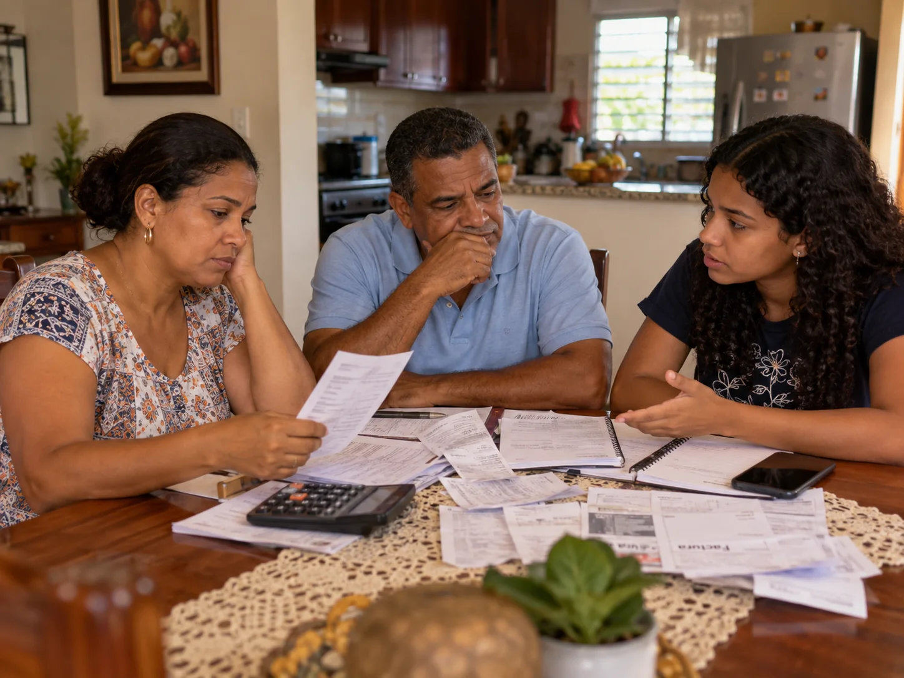

La escena
Una familia organiza sus pagos al cobrar: comida, transporte, servicios y una pequeña reserva para imprevistos. El presupuesto exige decisiones difíciles.
La arquitectura del mensaje convierte una preocupación cotidiana en una propuesta con acciones, costos por definir y mecanismos de rendición de cuentas.

| Nivel | Texto de campaña |
|---|---|
| Idea central | Que el ingreso alcance para la vida real. |
| Mensaje principal | Proponemos medir con claridad lo que cuesta vivir, apoyar temporalmente a hogares elegibles ante aumentos extraordinarios y dialogar sobre ingresos con reglas transparentes. |
| Mensaje secundario 1 | Una cifra de inflación necesita fecha, fuente y explicación: no representa igual el gasto de todos los hogares. |
| Mensaje secundario 2 | El alivio debe llegar a quien lo necesita, tener un plazo y contar con presupuesto publicado. |
| Mensaje secundario 3 | Hablar de salarios exige escuchar a trabajadores y empleadores y mirar el poder de compra, no solo el monto nominal. |
| Llamado a la conversación | Revisemos la propuesta, preguntemos cuánto costaría y contemos qué gastos presionan más el hogar. |
Una familia organiza sus pagos al cobrar: comida, transporte, servicios y una pequeña reserva para imprevistos. El presupuesto exige decisiones difíciles.
Un titular económico puede hablar de una tasa menor, mientras la familia recuerda cuánto pagaba antes por sus compras.
Explicar datos con claridad, proponer apoyos con reglas y dialogar sobre cómo sostener el poder adquisitivo.
La escena es ilustrativa y no representa un testimonio de una familia real.
Cercano, preciso y respetuoso. No usar el miedo ni culpar a una persona o sector de todos los precios. Indicar siempre cuándo un dato corresponde a agosto de 2026 y cuándo se habla de un ejemplo. Mantener visible que Alcanza RD es un ejercicio académico y que la candidatura no es real.